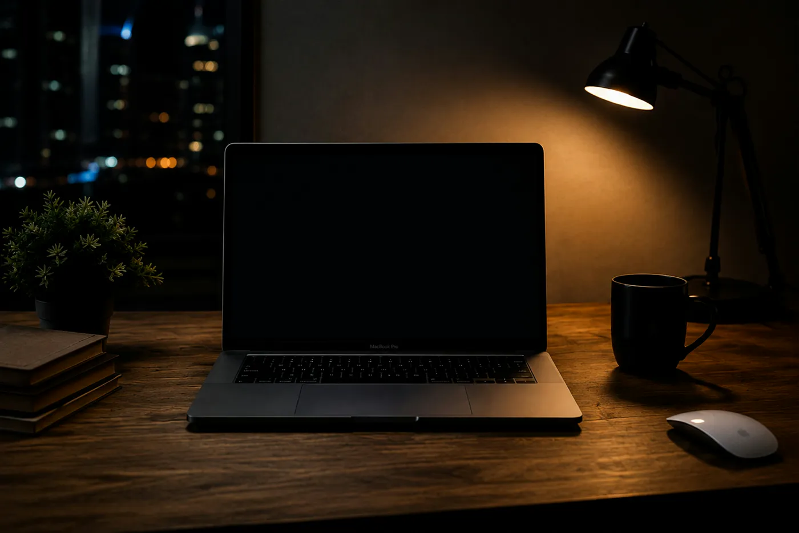

Area and window capture
The screen freezes the moment you start, so menus and hover states stay put. Hover a window to grab it whole, or drag any area.
QuickSnip is a fast, keyboard-first screenshot tool for macOS. Press ⇧⌘K, pick an area or a window, mark it up if you want, and finish with one key. ⇧⌘L records your screen instead.
brew install --cask yvorcer/tap/quicksnip
One key to finish
Once you’ve selected something, a single key decides what happens to it.
Straight to the clipboard, ready to paste anywhere. Return and double-click work too.
A PNG in the same folder as your macOS screenshots. ⇧⌘S picks a place.
Floats the screenshot above every window while you work.
Selects the whole screen, with the tools ready to draw on it.
Before you drag anything, C, S and P act on the window under the pointer. Esc, a right-click or ⌘⇧K closes the capture at any point.
Features
The screen freezes the moment you start, so menus and hover states stay put. Hover a window to grab it whole, or drag any area.
A magnifier shows the pixels and color under the cursor, and I copies that color as hex and RGB. Nudge with the arrow keys, resize with the handles. Captures are full Retina resolution and never resampled.
C copies, S saves, P pins, F selects the full screen.
Float a screenshot above everything else while you work. Drag it, scroll to zoom, copy it again later.
R rectangle, O ellipse, L line, A arrow. Hold ⇧ for perfect squares, circles and 45° lines.
D draws freehand. H highlights text without hiding it. A lazy mouse keeps shaky strokes smooth.
T adds a label. N drops 1, 2, 3… to walk someone through. Double-click text to edit it.
M pixelates and B blurs, so faces, names and anything private stay private.
1–7 pick red, yellow, green, blue, black, white or pink, and the color wheel picks any color. [ ] make lines thinner or thicker. Select a mark first to restyle it.
Drag any mark to move it. Delete removes it, ⌘Z and ⇧⌘Z undo and redo.
Works on every display. Capture on any connected screen, at that screen’s full resolution.
Fits into macOS. Plays the familiar screenshot sound, saves where macOS screenshots go or a folder you pick, and can open at login. Its settings sit on glass, with Liquid Glass on macOS 26.
Keyboard shortcuts
These are the defaults. To change the capture shortcut, the finishing keys or any tool’s key, choose Keyboard Shortcuts… from QuickSnip’s menu-bar menu. Hover any toolbar button while capturing to see its current key.
| ⇧⌘K | Start a capture |
| C · Return · double-click | Copy to clipboard |
| S | Save to your screenshot folder |
| ⇧⌘S | Save As… |
| P | Pin to screen |
| F | Select the full screen |
| I | Copy the color under the pointer |
| Esc · right-click · ⌘⇧K | Close, at any point |
| R | Rectangle |
| O | Ellipse |
| A · L | Arrow · Line |
| D · H | Pen · Highlighter |
| T · N | Text · Numbered step |
| M · B | Mosaic · Blur |
| Same key again | Put the tool down |
| 1 – 7 | Red, yellow, green, blue, black, white, pink |
| Color wheel | Any color |
| [ ] | Thinner / thicker lines |
| ⌘Z · ⇧⌘Z | Undo / redo |
| Delete | Remove the selected mark |
| Arrow keys | Nudge (⇧ for 10 pt) |
| Space while dragging | Move the selection |
| ⇧ while drawing | Squares, circles, 45° lines |
| Drag | Move |
| Scroll · pinch | Zoom |
| + − 0 | Zoom in, out, actual size |
| C | Copy |
| S | Save |
| Esc · double-click | Close |
QuickSnip records your screen too. Press ⇧⌘L, pick an area, a window or the whole screen, and press R. Stop, trim it, speed up the slow parts, then press C to copy an MP4 or GIF.
brew install --cask yvorcer/tap/quicksnipA key for everything
The record bar has a key for every choice, and remembers them for next time.
Draw an area like a screenshot. W records one window, F the full screen.
Records the Mac’s sound. M adds your microphone.
Your face in a bubble you can drag to any corner.
Counts 3-2-1 first, so you’re ready when it starts.
Return or R starts recording, and ⌘⇧L stops it. Esc, a right-click or ⌘⇧L closes the record bar before you start.
Features
Drag an area the way you select a screenshot. W records one window and follows it if it moves. F records the full screen.
A red frame pulses around it, and stays out of the video. The menu bar shows the time, with Pause, Stop and Discard.
C turns on the camera, and the bubble shows right away so you can check how you look. Drag it to any corner, before or while you record, and the video follows.
A circle or a square, with a white border, or soft edges that fade your face into the video. Settings → Recording shows a live preview.
S records the Mac’s sound and M the microphone. T counts down 3-2-1 before it starts.
Drag the ends to trim. Drag across the lane under the frames to speed a part up, and G steps it through 2×, 4×, 8×, then slow motion. The sound keeps its pitch.
P shows your clicks and K the shortcuts you pressed, never plain typing. F shows or hides your face; drag it to put it in another corner.
See the size before you export. C copies the video, ready to paste into a chat, and S saves it next to your screenshots.
Fix it afterwards. Mute the Mac’s sound or the mic if one was recorded by accident. ⌘Z undoes any edit, and closing asks before an unsaved recording is deleted.
Picks up where you left off. The record bar remembers your choices, and new recordings put your face in the corner you used last.
Keyboard shortcuts
These are the defaults. To change the record shortcut or any key in the record bar, choose Keyboard Shortcuts… from QuickSnip’s menu-bar menu. Hover any button in the record bar to see its current key.
| ⇧⌘L | Open the record bar |
| A · W · F | Area · one window · full screen |
| S · M | Mac’s sound · microphone |
| C | Camera |
| T | Count down 3-2-1 |
| Return · R | Start recording |
| Esc · right-click | Close the record bar |
| Space | Play and pause |
| ← → | Step a frame (⇧ for a second) |
| Drag the ends | Trim |
| Drag across the lane | Speed a part up |
| G · click a part | 2×, 4×, 8×, 0.25×, 0.5× |
| Delete | Remove a speed part, or the recording |
| ⌘Z · ⇧⌘Z | Undo / redo |
| ⇧⌘L | Stop and open the editor |
| Menu bar time | Pause, Stop or Discard |
| Drag the bubble | Move your face to a corner |
| P · K · F | Clicks · shortcuts · face |
| Drag the face | Put it in another corner |
| C | Copy |
| S | Save next to your screenshots |
| ⇧⌘S | Save As… |
Install
Runs natively on Apple Silicon and Intel Macs. Screen recording needs macOS 15 Sequoia or later.
brew install --cask yvorcer/tap/quicksnipQuickSnip lives in your menu bar, so there’s no window to open.
The first time, macOS asks for permission. Turn on QuickSnip in System Settings → Privacy & Security → Screen & System Audio Recording, then choose Quit & Reopen.
Run brew upgrade --cask quicksnip. Every release is signed with the same certificate, so updates keep your Screen Recording permission.
Download the zip, unzip it and drag QuickSnip to Applications. The first time you open it, macOS blocks it: go to System Settings → Privacy & Security and click Open Anyway.
The mic and the camera ask for permission the first time you record them. Showing your shortcuts needs Input Monitoring; the editor offers to open that setting.
Privacy
QuickSnip doesn’t upload, track or phone home. Its only connection is the Update QuickSnip button, which reads the newest version number from GitHub.
macOS requires that permission for any screenshot tool. QuickSnip only uses it to take the screenshots and recordings you ask for.
The camera and the mic only record when you turn them on in the record bar. Of your keys, only shortcuts like ⌘C are noted, never plain typing.
QuickSnip isn’t notarized by Apple, which needs a paid developer account. That’s why macOS asks you to allow it the first time.